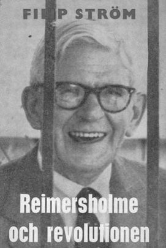
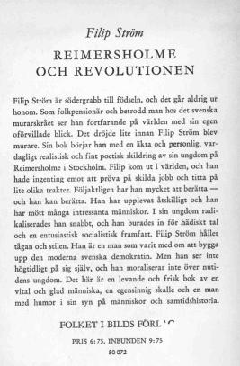

Södermalm i tid och rum


Skriver dels för att det roar mig att ur minnets skattkammare rekapitulera allt det man upplevt, dels därför att vår tids ungdom skall få vetskap om hur en man i ledet kämpat för det han ansett rätt - och mången gång kämpat för rätten att få leva. Ske alltså:
På etiketten till en flaska bordsbrännvin synes mitt barndomshem. Jag är nämligen född och uppfostrad vid Reymersholms spritfabrik. Min fader anställdes år 1878 vid tjugoåtta års ålder av brännvinskungen L. O. Smith. Vårt hus var stort och är så än. Där var kontor, där bodde direktören, tjänstemän och ett 30-tal arbetarfamiljer. Klasskillnaden kunde avläsas genom bostaden. Direktören hade en fil av rum, tjänstemännen mindre och mindre allt efter rangskalan. Arbetarna hade ett rum och kök, de flesta köken hade sekundär dager.
|
För oss barn var Reymersholm ett paradis med sommarens och vinterns alla fröjder. Utom
spritfabrikens, yllefabrikens och Charlottenborgs bebyggelse var allt det övriga vacker, storslagen
vildmark. Allt detta var vårt, där lekte vi våra lekar. Där lärde man sig namnen på alla mälarbåtar och
kände igen dem på långt håll. Från våra berg och höjder hade vi en hänförande utsikt över en stor del
av vår vackra stad och dess omgivningar. Sommartid var det segelregattor och lustresor man skulle se.
Vintertid hade vi alla tiders skid- och kälkbackar. En bra utsikt hade vi även från taket på vårt hus, dit
vi ibland klättrade upp när det var något särskilt på färde, t. ex. när kapten Rolla år 1890 höll på med
sina ballonguppstigningar.
Rätt lustigt, fast vi inte ägde ett uns, sade vi dock alltid "vårt" om bolagets ägodelar. Någon gång hände något som gav oss en förnimmelse om livets allvar och vår dödlighet. Det är en händelse som timade för mer än sextio år sedan, som etsat sig in i minnet. Några Bergsundare seglade ut en lördagskväll. De kom åter på söndagskvällen, men med lik ombord. Den drunknades moder, en änka, kom ned till båten och fick taga hand om sin enda son. Många olyckor och ruskigheter som man upplevde får skrivas på spritens konto. Ett är dock säkert, de satte spår i ett känsligt barnasinne. Ett av mina tidigare minnen är från 5-årsåldern, då jag var nära att drunkna. Våren var kommen med all sin glans, och vi grabbar begynte gå barfota, men mamma sade att det var för tidigt. Vara kruka inför de andra grabbarna kunde man inte, så jag och en annan grabb, som inte heller fått lov, klädde trots allt av oss strumpor och skor. När vi vid middagstid skulle in och äta, gick vi ned till en brygga för att tvätta våra fötter. Det bar sig inte bättre än att jag trillade i. Min kamrat skrek på hjälp, och jag minns hur jag sjönk, kom upp igen och sjönk på nytt. jag hörde det allra vackraste klockspel och allt var så skönt och vackert. Ja, sedan minns jag ingenting förrän jag vaknade till liv hemma i kökssoffan.
Nå, direktören fick till slut reda på vilka det var, och kontorspojken fick inga midsommarpengar det året. Vi andra syndare blev ålagda att infinna oss hos direktören. En dag när direktören tog sin middagspromenad i den vackra parken, som nu är vandaliserad, passade vi pojkar på att be om förlåtelse och lova bot och bättring. Vi fick absolution. Förstod inte då, men har tänkt på det mången gång sedan dess, hur svårt direktören hade att hålla sig för skratt, när han såg mig, den lille parveln på tio år. Fabriken hade ett trevligt kallbadhus. Varma sommardagar kom en hel del av fabrikens folk dit och badade. Middagsrasten var 1 1/2 timme och räckte alltså till bad. Många av dessa gubbar var elaka mot oss ungar och kastade oss då och då i sjön. En av dessa riktigt elaka hade lärt sig simma ganska bra på grunt vatten. En dag fattade han mod och simmade ut ur bassängen. Hans mål var en stor moring, som låg cirka tio meter från badhuset. På väg till moringen kom han antagligen att tänka på, att han var på djupt vatten, blev rädd, ropade på hjälp och sjönk. Fem grabbar, jag tio år och de andra något äldre, simmade ut och fick tag i honom och började vår livräddning. Bogsera honom tillbaka till badhuset hade varit närmast, cirka 8 meter, men inte fick en livräddningsbragd utföras så enkelt. Vi simmade med honom till klappbryggan cirka femtio meter från badhuset. På klappbryggan låg en tant och klappade tvätt och i tvättstugan stod två tanter och bykte. Alldeles naken kom han upp på klappbryggan, sprang genom tvättstugan och längs stranden tillbaka till badhuset. O, vad han var arg och vad han svor! Men vi, vi njöt. Vi grabbar hade vår vikingabalk, trots att ingen av oss läst Tegnér. Långfredagen skulle första doppet för året tagas. Ibland fick man maka undan isflaken för att komma i, men i skulle man och fort kom man upp.
På vintern, när det var is på vattnet, gick man inte den långa vägen över Bergsundsbergen, Hornstull, flottbron och vidare. Nej, vi gick den ginaste vägen över isen. En gång när vi skulle gå tillbaka till skolan efter middagsrasten, hade isbrytaren "Thor" varit framme och brutit ränna i isen. Vi skulle över i alla fall. Det bar sig ej bättre än att en grabb plumsade i. Han fick springa hem för att ömsa kläder, och vi väntade på honom. När han återkom, jumpade vi alla lyckligt över, men kom på så sätt en halv timme för sent till skolan. Trodde säkert att vi skulle få stryk, men läraren frågade blott varför vi kom för sent. En av de äldsta pojkarna förklarade. Läraren sade lakoniskt "jaså" och hans popularitet steg flera grader. En händelse under skoltiden ristade sig djupt in i mitt minne. En stor kraftigt byggd skolkamrat fick ett mål mat om dagen genom fattigvården. En dag kom han inte till skolan, och vi fick budskap om att han dött. Utsvulten hade han kommit för att få sig ett mål mat. Hans glädje var stor, när han denna gång fick besked om att han fick äta så mycket han ville. Han åt flera portioner ärtsoppa, men ärtorna var dåligt kokta. Hans mage svällde upp och han dog under förfärliga smärtor. Fabriken hade en mycket stor roddbåt, som vi kallade för "Arken". Med den härjade vi som vi ville och med den gjorde vi ungar våra strandhugg. Vi hade våra badvikar och våra blåbärs- och lingonhak. Rodd var en populär sport på denna tid, och vi grabbar tränade väldeliga. I 14-15-årsåldern var vi med om en hel del roddtävlingar. Det var lätta roddbåtar och snipor vi hade som tävlingsbåtar, fyra man och en styrman i varje båt. Vi tävlade i Mälaren och i Hammarbysjön. När vi tävlade i Hammarbysjön, bar vi båten över banken vid Götgatans slut. Mitt båtlag vann en gång ett tredje pris. Vi var väldigt malliga över vårt storartade pris, var sin dolk.
Vintertid åkte vi skridskor. När isen bar och innan snö täckte den, gjorde vi långa färder. Drottningholm var ofta vårt mål. När snötäcket satte stopp för långfärder, hjälptes vi åt att skotta skridskobana. När man begynt att arbeta, gick vi ibland ett helt gäng flickor och pojkar ned till klubbens skridskobana, där det var musik. Klubben kallades skridskobanan, som låg mellan två flottbroar på Riddarfjärden. Dessa broar lades ut varje vinter när färjtrafiken upphörde. Den ena gick från Mariahissen till Köttorget och den andra från Ragvaldsgatan till Mälartorget. Det var alltid mycket folk vid denna bana. Man åkte par om par efter musikens ljuva toner. Banan vid Nybroviken var även populär, men dit gick vi sällan. Gick man dit var det för att se tävlingar. Numera talas det så ofta om hur man skall taga sig upp ur en vak o. dyl. Inte pratade vi grabbar eller några andra om hur man skulle bära sig åt i en dylik situation, men åkte man i någon råk eller missade ett isflak, när man jumpade, kom man upp med en väldig fart. Har aldrig varit brydd över hur jag skulle taga mig upp, men hade någon frågat hur jag bar mig åt, skulle säkert svaret blivit att det gick så fort, så jag hann inte tänka på hur det gick till. I en sak var dock vi grabbar ense. Ramlade några i plurret, skulle man se till att ingen kom åt att klamra sig fast i en. Livräddning och konstgjord andning samt hur man skall frigöra sig om någon klamrar sig fast, hade vi lärt av äldre grabbar. Kommer så innerligt väl ihåg min stora glädje när jag fick mina första skridskor. Det var en mycket stor ekonomisk uppoffring av min underbara pappa. Han gjorde allt för hemmet och sina sex barn. En stor präktig kälke gjord av fabrikens smed hade vi och backar fanns det gott om. Skidorna var bastanta don, eklaggar gjorda av gamla brännvinsfat. Backar hade vi och stup byggde vi.
Jag såg aldrig min far slå någon häst. En gång när han på grund av sjukdom måst vara hemma någon vecka och kom åter sade stallmästaren: "Det var bra att du åter är frisk, ty ingen kan köra din häst." När hästen, som inte var van vid piska, fick känna piskan, stannade den, var den än befann sig. Det gick inte för den som var van att mana på med piskan att köra hästen. Jag var så glad i denna häst. Den löpte så villigt och fort. En gång blev min far uppskriven av polisen för fortkörning, men när polisen fick reda på hur det förhöll sig avskrevs ärendet. Det var vinter och tjugo grader kallt. Min far levererade brännvin till krogen vid Scheelegatan. Sin päls hängde han på en krok under klockan i kroglokalen. När han burit in och tappat av allt brännvin och fått kvitto på detsamma, var pälsen borta. I skjortärmar och utan vantar fick han köra den långa vägen från Kungsholmen till Reymersholm. Undra på att det gick fort. Dagen efter fick han lösa ut pälsen från en pantbank, men vantarna var borta. Var med pappa en gång då han lämnade brännvin till en krog vid Österlånggatan. Jag satt på kuskbocken för att vakta lasset. Vi hade nämligen på lasset en hel del buteljer "Stenborgare" (denna dryck finns inte numera). Ut från krogen kom en stor karl med ruskigt utseende. Hästen lade huvudet på sned. Den brukade göra det för att få en klapp, en socker- eller brödbit. När karlen såg att hästen lade huvudet på sned, harklade han upp en stor snorloska och spottade hästen mitt i synen. I samma stund kom pappa ut genom krogdörren och såg allt detta. Pappa tog karlen vid bröstet med sin vänstra hand och satte upp honom mot husväggen, så jag trodde att huset skulle braka samman. Med den högra handen gav han karlen en örfil och sade till honom att torka hästen ren. Karlen gjorde så och gick slokörad därifrån. Ett tjugotal år senare talade jag om denna händelse för en av pappas gamla arbetskamrater. "Då har du sett mer än vi, ty vi, hans kamrater, har aldrig sett honom slå varken djur eller människor" sade denne.
Jag kände mig illa berörd när han röt sitt "vad fan vill du". Framförde mitt ärende. Då röt gubben: "Ut och kom igen om torsdag på expeditionstid." Kände mig djupt besviken men sade helt apropå: "Fina pipor det där." O, under över alla under, det var visst "Sesam öppna dig", ty gubben sade i vänligare ton: "Tycker du det." Jag sade: "Snälla pastorn hjälp mig, så jag slipper komma hem med outrättat ärende, och skall jag verkligen behöva gå den långa vägen från Reymersholm och hit ännu en gång?" "Får väl hjälpa dig då, men det får djävlar anamma inte bli någon vana." Jag lovade det, och detta löfte, givet i så unga år har jag hållit. År 1893 när mamma skulle ha sitt femte barn, lades hon in på Södra BB och vi barn fick flytta hem till morfar, hammarsmeden Fagerström vid Bergsund. Långholmsgatan 2 var morfars adress. Huset är rivet och gatan heter numera Högalidsgatan. Mormor var död och morfar hade hushållerska. Att bo hos morfar var en upplevelse, ty han var en man av den gamla stammen, på sin tid "tillförskriven" till Bergsund från Motala. Konstigt ord det där "tillförskriven". Det kallades så när en mästare eller ett företag skrev till en viss person på annan ort och erbjöd honom kondition. Det ansågs som en stor ära att bli "tillförskriven", ty då hade man svart på vitt att ens yrkesskicklighet låtit tala om sig. Bostaden var ett rum och kök, ovanligt stora. Spiskammaren gick inte av för hackor och vilka förråd det fanns där. Det var 100-kilos säckar med mjöl o. dyl., mindre säckar och lådor med kaffe, russin och alla slags olika specerier, sockertoppar m. m. Provianteringen skedde i regel en gång om året. Morfar var med i den av L. O. Smith startade Ringrörelsen och hade några aktier i Arbetarringens bank.
På den tid som berättelsen nu omfattar fanns inte någon begränsning av arbetstiden. Utkörarna fick köra tills alla order för dagen var expedierade. Ibland kunde klockan bli nio och tio på kvällen innan hästen kom i stallet och utköraren äntligen blev fri. En natt väckte mamma mig. Jag var ju äldsta sonen. Hon var rädd och måste ha någon att prata med. Pappa hade mitt i natten blivit väckt och fått order att sadla en häst och rida till Östermalms polisvaktkontor för att hämta ett par hästar och en vagn. En utkörare A. skulle sent en kväll lämna brännvin på en finnskuta vid Nybroviken. Hur det gått till blev aldrig klarlagt. Det talades om rånmord. Alltnog, vid draggning fann man liket av A. Och nu bidade mamma och jag att pappa skulle komma hem. Jag minns så väl A. när han låg svept i sin kista. Det syntes så väl att han fått kramp innan drunkningsdöden inträtt. Sådana syner etsar sig in i minnet på en liten parvel. Fabriken såväl som Bergsunds verkstad hade särskilda utrymmen, som användes till likbodar. Alla som dog vid Reymersholm eller Bergsund skulle man se, när de stod på "Lit de parade". Som väl är existerar inte den seden längre. Det var ju rena barbarismen att låta ungar se lik.
En sed som ännu var kvar under mina barnaår var att vid bröllop samlas i flock och ropa "bruden fram". Det gavs ingen pardon, hon måste fram till allmänt beskådande.
BRÄNNVINSKRIGEN Helt skarpt blev där nu drucket allt i det kungahus, var enda kämpe tog sig ett ärligt julerus, gick sedan bort att sova förutan harm och sorg; men konung Ring den gamle sov hos skön Ingeborg. Så gick det, enligt Esaias Tegnér, till på vikingatiden. Nu för tiden ser man sällan någon berusad. Det är inte längre karlavulet att supa sig full. Allt är så städat och ordentligt. Gamla traditioner lever dock alltjämt. På julbordet skall förutom julmaten även finnas brännvin och julöl samt på juldagen glögg. Brännvin och kaffe tycks vara oumbärliga varor för oss svenskar. En gång i tiden fanns varken kaffe eller brännvin i vårt land. Först i början av 1700-talet tycks bruket av kaffe begynt. På 1400-talet fanns brännvin men användes blott till kruttillverkning. År 1494 förbjöds brännvins brännande och försäljning, utom för tillverkning av krut. År 1622 fanns i Stockholm särskilda brännvinshus. Först 1638 stadgas avgift för brännvinsbränning till salu och husbehov. I slutet av 1600-talet begynte brännvinet komma allmänt i bruk inom de fattiga klasserna. Konsumtionen av brännvin ökade år efter år och höll jämna steg med industrialismens utbredning, eller med andra ord, höll jämna steg med nöd och armod. Brännvinet blev den fattiges enda fröjd. Undra på, att till exempel en åkardräng som hade sin sovplats i någon spilta i stallet eller på höskullen, och som inte hade några andra kläder än de han hade på sig, köpte en liter och söp sig full och var salig över helgen. Finns det något som bringat så mycket sorg, nöd och elände och olyckor som brännvin? Men tänk så många i vårt land, som tjänat sig förmögna på brännvinshandel och hedrats som vasariddare m. m. En av dem är L. O. Smith. Smith, eller Lars Olsson som han först hette, föddes i Kiaby, Kristianstads län den 12 oktober 1836.
Det var lysande tider för brännvinshanteringen. Konsumtionen var mycket stor. Husbehovsbränningen hade genom förordning upphört år 1855. Man har sagt, att hade inte husbehovsbränningen upphört, hade svenska folket supit ihjäl sig. För många år sedan talade jag med en trovärdig person född 1836. Han mindes mycket väl husbehovsbränningen och talade om att på gården där han tjänade stod för jämnen en spann full med brännvin, bredvid spannen hängde en skopa. Man tog sig en skopa brännvin när man tyckte det smakade. När ungdomen samlades till gillen förekom inte brännvin, det var för simpelt ansåg man, och det hade man förresten så mycket man ville hemma på gården. Däremot skramlade man till rom, men det drack man ur glas. Man förstår så väl hur det söps, och ändå tycka vi som är födda på 1880-talet, att i vår ungdom söps det rent förfärligt. Har sett hur man gjort: En linnetuss doppas i brännvin och därefter stoppas den i munnen på en skrikande barnunge, för att få den tyst.
År 1869 köpte Smith ett stort industriområde vid Reymersholm och byggde reningsverk samt bildade bolag. Stadsfullmäktige hade uttryckt en önskan om att antalet krogar skulle minskas. År 1864 fanns i Stockholm 504 krogar och andra utskänkningsställen. Staden inköpte efter hand en mängd rättigheter och 1877 övertog det nybildade Stockholms Utskänknings Aktiebolag hela brännvinshandeln, samt startade den 1 oktober i alla stadsdelar med de s. k. bolagskrogarna. På en dag minskades krogarnas antal från 193 till 87. Från L. O. Smiths bolag hade man inte begärt något anbud om leverans.
Allt detta skulle nu bevisas. Smith satte sig i förbindelse med franska och engelska vetenskapsmän, avtalade med dem om en rad experiment, men började med hundar och svin. Undersökningarna gick i önskad riktning, finkel var farlig. I Stockholm experimenterade en professor med kaniner. Tyskar experimenterade på sig själva. Vid ett besök i Kairo köpte Smith ett dussin apor och sände dem till en vetenskapsman i England. I samband med världsutställningen i Paris 1878 framkom förslag om att även anordna en vetenskaplig alkoholkongress. Fransmännen antog förslaget och franska regeringen var förstående, men pengar saknades. Smith ställde 200 000 francs till franska regeringens förfogande. Kongressen kom till stånd och även diskussionen om finkelns skadlighet. Världspressen försåg Smith med en förstklassig reklam om finkelns skadlighet. Jag kan inte låta bli att tala om att jag i min ungdom sett ett flertal personer som fått delirium tremens fastän de blott, men flitigt, tärt tiodubbelt renat. Det är något hemskt att se, och den sjuke måste vaktas för att inte få tillfälle till självmord. Smith fortsatte sin annonsering, men nu i alla länders större tidningar. Utskänkningsbolagets styrelse och alla andra intressenter vidtog alla tänkbara åtgärder mot Smith och hans bolag. Bland annat plockade man fram en gammal förordning som stadgade en avgift av 1 öre per kanna för allt brännvin som infördes till Stockholm. Brännkyrka tillhörde inte Stockholm på denna tid. Det blev tusentals ettöringar som hamnade i hamnbetjäningens fickor.
I mångt och mycket var Smith rätt originell. En gång skrev en nykterhetsförening till honom och frågade vilka åtgärder man enligt hans mening skulle vidtaga mot superiet. Svaret blev: "För min del ville jag, att natthärbärgen upprättades, icke allenast i Stockholm på flera ställen, utan i alla städer, till vilka härbärgen polisen förde alla överlastade för att där sova ruset av sig samt, då så skett, dagen därpå giva dem ett ångbad med kalldusch och därefter en god riklig måltid mat, att de ånyo bliva färdiga för arbete. Då drinkarna icke skada samhället utan tvärtom betala stat och kommuner omkring 30 miljoner kronor årligen, så synes det mig vara rent omänskligt att de kastas i fängelse för att sova ruset av sig och sedan, om de saknar fem kronor få vatten och bröd i fyra dygn." Vid ett tillfälle förklarade Smith att han var motståndare till kravet om allmän rösträtt. Ge, sade han, alla arbetare en inkomst av minst 800 kronor per år, så är rösträttsfrågan löst. Så enkelt var det inte, visserligen var gränsen för rösträtt till riksdagsmannaval satt till 800 kronor, men till kommunala val var det den 40-gradiga röstskalan. Men det var en fin appell till arbetsgivarna att betala sina arbetare ordentligt, det fanns sannerligen inte många arbetare som tjänade 800 kronor årligen. Själv var Smith, vad Reymersholm beträffar, en mönsterarbetsgivare, ty de löner och förmåner hans arbetare hade under hans tid intill 1880, var bra efter den tidens förhållanden och penningvärde. Vid ett studium av Smiths liv och verksamhet får man den uppfattningen att hans kapitalistiska kolleger innerst inne var rädda för honom. De visste aldrig riktigt var de hade honom. Det är väl därför alla dessa konspirationer och intriger samt kuppförsök bakom hans rygg iscensattes. Inom de inre brännvinskapitalistiska kretsarna drog man sig inte ens för medel som tangerade det olagliga för att komma honom till livs och få bort honom från Reymersholm. Smith tröttnade eller rättare sagt resignerade och sålde i slutet av december 1880 för något över 1 miljon alla sina aktier i Reymersholms-bolaget.
Påskaftonen 1883 var tillströmningen av folk så stor, att nio poliser måste ordna köerna. Smiths andra stora brännvinskrig var i full gång, denna gång på stadens egen mark. Reymersholms- och Utskänkningsbolagen var rasande. På alla sätt försökte man sätta stopp för trafiken på Fjäderholmen. Den gamla bestämmelsen om ett öre per kanna i hamnavgift trädde åter i aktion och kannbetjäningen fick fullt sjå att inkassera tusentals ettöringar. Polisen satte man även i verksamhet och det blev polisundersökning på Fjäderholmarna, men trots god vilja fanns det inget man lagligen kunde slå ned på. Överståthållaren skrev till länsstyrelsen och uppmanade den att förhindra ett förnyande av utskänkningsrättigheterna. Länsstyrelsen kunde inget göra, det tillkom kommunalstämman och ingen annan att bevilja eller avslå. Någon utsikt till att kommunalstämman skulle avslå förnyandet av rättigheterna fanns inte, ty kommunen hade mycket stora inkomster på brännvinshandeln. Kosta vad det kosta vill så måste vi få slut på Fjäderholmstrafiken, resonerade tydligen Reymersholms- och Utskänkningsbolagen. Och till slut lyckades man att få Lidingökungen, som var kommunalnämndens ordförande, på sin sida. När stämman hölls avgjorde han saken med sina 1 400 röster. Brännvinsförsäljningen på Fjäderholmarna upphörde den 31 oktober 1883. Det andra stora brännvinskriget var slut. Denna gång förlorade L. O. Smith slaget. En besvikelse var det nog att han inte vann även detta krig. Någon slagen man var han inte. Han var stor och mäktig, hade fått i gång stor export bl. a. på Spanien. Exporten var så stor, så att spriten som producerades inom landet inte räckte till, utan Smith måste köpa sprit i Ryssland för att klara sin uppgjorda export.
"Vi struntade i Smiths brännvin och gick våra egna vägar, affären har gått bra i alla år. Varje år har det blivit god återbäring, som arbetarhustrurna satt stort värde på, ty av dessa pengar har de kunnat komplettera linneförråd och dylikt till hemmet, som den knappa lönen inte räckt till för." Många av dessa affärer har existerat intill våra dagar och varit goda föregångare för vår kooperativa rörelse. Ångkök prövades även, men lyckades inte. Arbetarringens bank gick bra och verkade ett 40-tal år, uppgick sedan i Sörmlandsbanken. En ny tid bröt in, den moderna arbetarrörelsen begynte sin frammarsch och sopade bort ringrörelser och alla andra halvheter. Nu gör vi ett långt hopp in i vår tid för att taga del av det tredje brännvinskriget. Alltsedan det första stora brännvinskriget 1877-1879 hade Reymersholm haft leveransen av allt brännvin till Stockholms alla krogar och brännvinsmagasin. Ett konsortium byggde en spritfabrik vid Liljeholmen och lyckades få leveransen till Stockholm åren 1906 och 1907. En femtedel av brännvinsproduktionen konsumerades vid denna tid i Stockholm. Reymersholmsbolaget ville naturligtvis sälja, men det var inte så enkelt nu som på Smithens tid. Det fanns lagar och förordningar som förbjöd utminutering.
|
Sedan har det berättats att folk från fabriken kom med båtshakar och dragg, men bäst det var
kom en utkörare vid namn Stavström hem från staden. På färden till stallet fick han syn på
folksamlingen vid bryggan. Han vände sin häst och körde ned till bryggan. "Vad står på här?"
sporde han. "Ströms Filip har drunknat", blev svaret. "Var ungefär ligger han?" frågade
Stavström. Som han stod, fullt utkörareklädd, hoppade han i och kom upp med mig. Sedan visade
han en del män hur de skulle behandla mig. Konstgjord andning
lyckades den gången. Stavström var infödd stockholmare och han hade lärt den ädla
simkonsten hos Köhlers, som gamla Strömbadet kallades på den tiden.
I flera veckor hade jag känning av detta mitt första äventyr. Bäst jag sprang och lekte fick jag nysa. Sötvattensluften satt länge i näsan. Det sägs att bränt barn skyr elden. Undantag måste det vara för att bekräfta reglen. Man tycker att jag efter mitt stora drunkningsäventyr skulle bli rädd för vatten. Nej, det var tvärtom. De första simtagen tog jag samma år. Vi tränade i klädsim och avklädning i vatten, och jag förkovrades i simkonsten. Vid tio års ålder under ett skollov kom jag och några äldre pojkar överens om att ramla i sjön när ångslupen passerade. En vacker dag stod vi så samlade vid Reymersholmskajen, och strax efter det båten passerat Reymersholmsbron på väg till Hornstull, "ramlade" jag i. De andra grabbarna svek. Jag hörde hur kaptenen i sitt talrör skrek "stopp", men när han skrek "back", skrek grabbarna åt mig att simma i land, så att jag inte skulle fastna i snurran (propellern). Ja, nu hade man ställt till. Ångslupsbolaget rapporterade till Reymersholm och direktör Nisbeth tog själv hand om saken. Yngsta kontorspojken fick i uppdrag att taga reda på vilka som arrangerat uppträdet. Kontorspojken kunde inte rapportera något. Han var ju med bland arrangörerna.
Midsommarafton skulle man även bada klockan tolv midnatt. Det var ett härdande liv detta. Aldrig blev man förkyld, inte ens när man på vintern vid jumpning någon gång plumsade i. Tänk så oskyldig man var. En gång hade hatten blåst i sjön för en flicka vid namn Hilma. Hon grät och var så olycklig för sin hatt. "Gråt inte Hilma, jag skall bärga hatten din", tröstade jag. Vi gick ned under Reymersholmsbrons södra landfäste. Där klädde jag av mig och Hilma vaktade mina kläder och hatten blev bärgad. ja, så enkelt var det. Småbarnsskola hade vi vid Reymersholm och storskola vid Liljeholmen. Reymersholm tillhörde dåförtiden Brännkyrka församling. Först gick jag i småskolan och därefter i storskolan vid Liljeholmen. Nog tyckte man det var bakvänt att först gå från Reymersholm och in i Maria församling och så ut till Brännkyrka församling. Min äldsta syster gick i Maria folkskola, först vid Hornstull och därefter vid Ringvägen. Min mor bodde som flicka vid Bergsund och var van att anlita Långholmens fängelse när skor skulle halvsulas, doktor konsulteras och dylikt. När jag föddes gick hon inte den långa vägen till Brännkyrka för att få mig döpt. Prästen vid Långholmen anlitades. Skoltiden var en härlig tid. Jag hade mycket lätt för att lära, nästan för lätt. I en av våra första läseböcker stod en liten vers om "fyra pojkar på en häst". Fröken bad mig läsa den ur boken. Jag tog boken och läste perfekt utantill men låtsades läsa innantill. "Det där gick för bra" sade fröken "du läste bestämt utantill." Hon kom fram till mig och bad mig läsa, men vi hoppade hit och dit i läsningen, och då gick det inte alls så bra.
Jag var mycket tillsammans med en äldre pojke, vars far hade en segelbåt. Denna pojke lärde mig segla. Var mycket förtjust i att fiska. Har aldrig fått så mycket ål som den gången jag och en pojke, Kalle L., tjuvfiskade. Vi kom hem en morgon med stora präktiga ålar. "Var har ni haft långreven i natt, eftersom ni fått så mycket ål?" frågade mamma. "Runt Årsta holmar" blev mitt svar. "Herre gud pojke, har du inte reda på att det är förbjudet att fiska där. Fiskerätten har arrendatorn av Årsta holmar", sade mamma. Det där hade vi inte reda på, men det var första och sista gången jag tjuvfiskade. Innan jag slutar att tala om sommarens fröjder, kan jag tala om att de flesta arbetarna, som bodde i fabrikens bostäder, i regel även hade trädgårdstäppor med s. k. lusthus. Vi odlade mycket grönsaker till egen konsumtion. Jag vill nämna detta därför att en hel del folk tror att det är något nytt att äta mycket grönsaker. Vitaminer, det ordet fanns inte i vårt ordförråd, men att det var nyttigt att äta grönsaker förstod man ändå. Tomater och bananer var dock för oss okända, men en apelsin fick man vid jultid. Ibland hade vi syskon våra fester. Mamma hade en kallablomma, som blommade så vackert en gång varje år. Det kom i regel på min lott att sälja denna blomma. Den såldes till en blomsterhandlare, som hade sin affär i hörnet av Södermalmstorg och Brunnsbacken. Dessa låga hus är som bekant rivna. Ibland fick jag en krona och ibland sjuttiofem öre för kallablomman. Det var denna tid efterfrågan på kallablommor, ty det var sed att en död skulle ha en kallablomma i handen, innan locket lades på kistan. Alltnog fick jag någon gång efter en sådan affär lov till att gå till Percy Lucks affär vid Kornhamnstorg och köpa för tjugofem öre skadad frukt, ibland fick jag gå till Lars Nilssons bageri vid Långholmsgatan och köpa för tjugofem öre gammalt kaffebröd. Antingen jag köpte frukt eller bröd så blev det stora påsar, och vi syskon hade verkligen kalas.
Innan jag var tio år gammal fanns det inte en krog eller ett brännvinsmagasin i hela staden, som inte jag besökt. Saken var den att när man fick jullov i skolan, följde man med någon utkörare som s. k. matsäck. På så sätt fick utköraren en välbehövlig hjälp i julbrådskan och vi pojkar fick pengar till julklappar åt mamma, pappa och syskonen, ty inte kunde man tänka sig en jul utan att man gav och fick klappar. Av välvilliga krögare och krögarfruar fick vi drickspengar. På vissa ställen bjöd man även på mat, och då var det kalas. Utköraren fick en sup och en öl till maten och vi fick sockerdricka eller lemonad. Dessa matkrogar kände vi pojkar väl till. Vi kunde dem bättre än långkatekesen. Det var roligt att åka med utkörare. Ibland fick man köra. När det bar hemåt hade man fullt sjå att hålla igen, ty hästarna ville hem till stallet, men vi måste hålla igen, så vi inte blev uppskrivna för fortkörning. Det fanns dock ställen där det bar iväg i full karriär. Ett sådant ställe var ginvägen genom de s. k. rackarbergen, dvs. från Götgatan till Zinkensdamm. Någonstans i närheten av nuvarande Rosenlunds ålderdomshem hade en utkörare blivit rånad på pengar och en brännvinskagge. Man hade slagit honom sanslös, lagt upp honom på lasset och vänt hästen, vilken återvände till Reymersholm. Hästarna sköttes på ett utmärkt sätt. Inga andra än förstklassiga hästar inköptes, och innan affären gjordes upp undersöktes hästarna alltid av veterinären.
En gång varje vår var det bolagsstämma vid Reymersholm. Bolagsgubbarna kommo i droska eller ekipage, alla klädda i höga hattar. Vi barn bidade troget på gatan till dess bolagsstämman var slut. När gubbarna kom ned på gatan, såg de nöjda och belåtna ut. En efter en tog de en näve full med tio- eller tjugofemöringar och kastade ut på gatan åt oss. Där lågo vi fattiga ungar, pojkar och jäntor, och slogs som små vilddjur, allt under gubbarnas stora glädje. Jag kan inte minnas, att jag hörde några svordomar i mitt barndomshem. Naturligtvis hörde man väl en del kraftuttryck, men i så fall gick det in i det ena örat och ut genom det andra. Första gången jag reagerade mot svordomar var i prästgården. Jag var åtta eller nio år gammal när en dag en av de yngre utkörarna vid Reymersholms spritfabrik bad mig gå till prästgården i Brännkyrka och få ett utdrag av prästbetyget åt honom. Detta uppdrag åtog jag mig gärna inför den utlovade belöningen av femtio öre, som var stora pengar för en arbetarpojke på den tiden. Jag traskade iväg den cirka en halv mil långa vägen från Reymersholm till Solberga prästgård i Brännkyrka. Vi grabbar gick aldrig landsvägen med allt sitt damm, när vi skulle till Brännkyrka. När man kom fram till Liljeholmen och hade passerat stationshuset, gick man ned på järnvägen, lade sig ned och lyssnade på rälsen om något tåg var i faggorna. När inget hördes, gick man in i den långa tunneln och fortsatte nästan hela vägen fram till Älvsjö station. Jag kom så fram till prästgården, sporde efter pastor Andersson, blev hänvisad till ett rum och knackade på. Vid ropet "stig in" öppnade jag dörren och steg in. "Vad fan vill du?" röt en röst åt mig. Rummet var så tjockt av tobaksrök, så maken till det har jag aldrig sett. När ögonen något så när vant sig, såg jag genom rökdimman en gubbe klädd i en lång rökrock. På huvudet hade han en kalott och i käften en bolmande långpipa. Rummets ena långsida var beklädd med rökpipor. Det började med små pipor och så större undan för undan och slutade med pipor, som gick från golv till tak.
Varje kväll åt vi gröt. Morfar ville promt att vi förutom sirap till gröten även skulle ha en stor smörklick i den. Sirap tyckte vi om, men smör till gröt var för mycket av det goda tyckte vi. Morfar menade så väl och ville göda oss med allt möjligt gott. Glädjen stod ändå högt i tak den dag vi fick komma hem till Reymersholm till våra kära föräldrar. Nog var det bra fattigt i vårt hem, men vi led aldrig någon nöd och mamma höll oss både hela och rena. Vid stranden av Långholmsviken mitt emot Långholmen låg Reymersholms Yllefabrik. Denna fabrik revs för några år sedan för att lämna plats åt bostadsbebyggelse. Vid tiden för denna berättelse, något av åren 1892 eller 1893, var arbetarna, som mest bestod av kvinnor och yngre pojkar, ej organiserade. Vid fabriken var en kortväxt spinkig tysk anställd som verkmästare. Han var närgången och brutal mot fabrikens kvinnor. En dag kulminerade det, när han örfilade en yngre kvinna. Vi var några smågrabbar som denna vackra sommardag satt och metade vid spritfabrikens kaj strax bredvid Reymersholmsbron. När arbetet för dagen var slut vid yllefabriken och arbetarmassorna strömmade ut, lade vi märke till att ingen av kvinnorna gick över bron utan de stannade på mitten av den. Vår nyfikenhet var väckt och vi blev vittne till ett sällsynt skådespel. När den lille verkmästaren kom till mitten av bron, blev han fasttagen och fasthållen av ett par bastanta kvinnor. Ett par andra var genast framme och knäppte ned byxorna på honom och så blev han lagd över knäna på en av kvinnorna. Där låg han med rampan i vädret, och så gick en efter en fram och slog med handflatan två slag på den blottade ändalykten. När alla slagit sina två slag, släpptes den lille tysken, och kvinnorna gick därifrån. Med stor möda släpade sig den lille verkmästaren hem. - Det sägs att medicinen var bra, ty efter den behandlingen blev den lille inte längre närgången och brutal.
Räkenholmen
Först i våra dagar har holmen fått namnet Reimersholm. Spritfabriken hette och kallas ännu Reymersholm m. m. Yllefabriken, som även ägde Anders Reimers gamla malmgård, hette Reymersholms Yllefabrik. Har inget emot att hedra Anders Reimers minne genom att ändra stavningen. Brännvinskungen L. O. Smith Min far och alla de gamla från Smithens tid talade ofta om brännvinskrigen och hur det var förr. Det kan därför vara på sin plats att något tala om detta samt även om hur arbetsvillkoren var innan facklig organisation kom till stånd.
Han hade medfödd fallenhet för affärer. Hans färd från fattigdom till rikedom förefaller som en saga. Vid tio års ålder slutade han sin skolgång och sattes i lära hos en handlande. Vid fjorton års ålder kom han med en skuta till Stockholm och fick plats hos en handlande vid Stora Bastugatan som butiksföreståndare. Började med skeppsmäkleri och förtjänade vid 20 års ålder cirka 10 000 kr per år (10 000 omräknat i nuvarande penningvärde blir omkring 45 000). Om vintrarna när skeppsfarten låg nere pluggade han och lärde sig bland annat sju språk. Att skildra de två första stora brännvinskrigen utan att skriva en hel del om L. O. Smith går inte. År 1857, samma år som Lars Olsson började med sitt nya namn L. O. Smith, inträffade en händelse som förde in honom på brännvinsbanan och som i ett trettiotal år framåt skulle ge genklang, inte blott i vårt land, utan även långt ut över våra gränser. En ekonomisk kris utbröt, bankerna fick svårigheter och många affärsmän gick i konkurs. Bland dem som sattes i konkurs fanns en hel del som drivit stora brännvinsaffärer på Skåne och Blekinge. Brännerierna ville ha avsättning för sina produkter och skutskepparna ville frakta som förut. Skepparna kom med sina lastade skutor till Stockholm men kunde inte finna köpare. I sin nöd vände de sig till Smith och bad om hjälp, naturligtvis mot provision. Smith accepterade och hyrde kontor och lagerlokal och anställde en man som tidigare sysslat med brännvinshandel. På nio månader tjänade Smith på denna affär som bedrevs som bisyssla 45 000 kronor. Slutade sedan med sitt skeppsmäkleri och lånade av skeppsmäklaren 300 000 kronor. Efter tre år var lånet återbetalt. L. O. Smiths väg till rikedom började nu. Denna väg var dock kantad med många svårigheter och ekonomiskt krig, där ingenting fattades av vare sig intriger, bedrägerier, lögner, skandaler och mutor.
Den 12 september meddelade Smith i jättestora annonser, att hans bolag den 1 oktober öppnade en nybyggd spritbutik på Reymersholm. Han bjöd ut stockholmarna till Reymersholm som låg utanför stadsgränsen. Fyra ångbåtar förde var tjugonde minut gratis vem som så ville ut till Reymersholm. Femdubbelt renat såldes för 1: 60 och tiodubbelt renat för 1: 75 per kanna (en kanna = 2,6 liter). Båtarna gick fullastade ut och in. Det fanns dagar då Reymersholm besöktes av 25 000 personer, väl rustade med kuttingar, krukor och buteljer. Det var då man sjöng: Tänk nu om Smithen dör och brännvinet tar slut. Då får vi lapa drank, som vi har gjort förut. Det blev en väldig strid, det var ju så många som var intressenter i brännvinshandeln. Många av stadsfullmäktiges ledamöter var aktieägare i krogföretaget. I Stockholm fanns vid denna tid inte mindre än 28 destillatörer som i gammalmodiga apparater renade råbrännvinet från de grövsta föroreningarna. Man spädde även ut spriten för att på så sätt göra större profit. Smith hade förstklassiga reningsapparater och saluförde absolut renat brännvin. Smith var en stor propagandist för sitt brännvin. Aldrig tidigare hade stockholmarna skådat en så stor annonskampanj som den han nu satte i gång med. Inte nog med att han tog pressen till hjälp, även vetenskapen tog han i sin tjänst. Genom omåttligt förtärande av brännvin angreps tusentals människor av delirium tremens, många av dem intogos på sjukhus, många av dem dog av alkoholmissbruk. Nu påstod Smith, att allt detta berodde på det dåliga brännvinet, som innehöll för mycket föroreningar och finkel. Hans brännvin var renat från alla skadliga beståndsdelar, han gjorde alltså folket en stor tjänst genom att tillhandahålla sitt förstklassiga brännvin.
Man sökte även påverka Brännkyrka kommun att indraga utminuteringsrättigheterna. Om detta berättar min far, som vid denna tid tjänstgjorde i butiken med utminutering: "En dag kom Smith och frågade om jag ville köra åt honom. Det skulle bli en viktig tjänsteresa. De stiligaste hästarna med glänsande seldon spändes för och så bar det iväg från gård till gård i Brännkyrka och Enskede, som vid denna tid var en kommun. Presenter hade de med sig, förutom brännvin var det även stora korgar med spanskt vin. Från varje gård åkte Smith fullt tillfredsställd. Dessutom avstod Smith 1877 års nettovinst på försäljningen i den nya butiken. Det blev 36 000 kr. Inte illa tjänat på tre månader, butiken öppnades som förut sagts den 1 oktober. Det slutade med en glänsande seger för Smith, enär utskänkningsbolaget måste förbinda sig att i fortsättningen taga allt brännvin från Reymersholmsbolaget". Smith var nu mäkta populär och omtyckt av småfolket. Har hört min fader och många andra av Smiths gamla arbetare säga, att Smith var en omtyckt arbetsgivare. Han var trots sin rikedom inte högdragen, han kunde tala och skämta med vem som helst. Var han i stan och skulle hem till Reymersholm, kunde han helt ogenerat hoppa upp på vagnen hos någon på hemväg varande utkörare. Men, tillade min far, mot de stora och mäktiga var han hård. En sak förundrade dock arbetarna och många andra - Smith tärde aldrig brännvin.
Därmed var det dock inte slut på hans spritaffärer. I Skånska spritfabriksaktiebolaget hade han 900 aktier av ettusen, i Karlshamns fabriker 529 av 600. I Stockholm och i Göteborg anlade han nya fabriker, båda hade en kapacitet om 150 000 liter i veckan. Råvaran var 96-procentig sprit från Skånebolaget. Smith hoppades att han skulle få leveransen till Utskänkningsbolaget. Det gick inte som han beräknat. - Undrar dock om han verkligen räknat därmed, trots hans stora ord om att det borde vara fri konkurrens. I segeruppgörelsen den 12 januari 1879 fick ju Utskänkningsbolaget förbinda sig att taga allt sitt brännvin från Reymersholm. Bolaget var visserligen ombildat sedan Smith gjort sin miljonaffär, men ett avtal är ju ett avtal. Alltnog, den 27 mars 1882 annonserade Smith i Stockholms-Tidningen under rubriken KRIGSFÖRKLARING Han meddelade att han från fabrikerna och minutaffärerna i Malmö och Kristianstad sålde all slags sprit till lägre priser än Utskänkningsbolaget. De som så önskade hade bara ett rekvirera. I segelleden i inloppet till Stockholm ligger Fjäderholmarna, där det på den största av holmarna sedan urminnes tider varit värdshus. Stockholms stad hade år 1849 för 9 750 kronor förvärvat holmarna. Stockholm utarrenderade värdshuset till en källarmästare Danielsson. Staden hade skyldighet att under vintern hålla öppen ränna till ön. Holmarna sorterade kommunalt under Lidingö kommun, som beviljade utskänkningsrättigheter. Med källarmästaren träffade Smith avtal. Den 15 november 1882 annonserades i alla tidningar om fri resa till Fjäderholmen från och med måndagen den 20 november 1882. Absolut rent brännvin av utmärktaste slag, tillverkat av Skånska Spritfabriks Aktiebolaget skulle säljas i parti till 1: 75 per kanna och i minut 1: 90 (en kanna 2,6 1.). Båtar med uppvärmda salonger skulle avgå från Stockholm alla helgfria dagar minst två gånger i timmen. Resa till Fjäderholmarna och köpa brännvin blev populärt.
Fattigdomen i vårt land var stor. August Palm kom 1881 tillbaka från sina utlandskonditioner. Han kom åter till sitt land, som en övertygad socialist. Och började sin intensiva agitation. Smith hade under sina utlandsresor studerat arbetarfrågor. Kooperationen i England hade han grundligt satt sig in i. Socialismen var Smith motståndare till. Han ansåg att arbetarklassen i vårt land inte var politiskt mogen. Ren kooperation var folket heller inte moget för, men något måste göras för att förbättra arbetarnas ställning. Han utarbetade ett program, som gick ut på att skaffa arbetarna god och billig föda, bättre bostäder till rimliga priser osv. Parollen om att bilda arbetarringar kom ut. Stora skaror av arbetare och småfolk runt hela landet fylkade sig under dessa paroller. Smith offrade mycket pengar på denna sin sociala verksamhet. Han var nog besjälad av socialt patos, men det fanns även ett egoistiskt motiv - brännvinet. Inte tu tal om annat än att verksamheten gjorde nytta, man åstadkom något. Billiga näringsställen öppnades, där man kunde få tre måltider om dagen för en krona. (Det hade varit något för Rubbestad, som sagt att han kan leva i dagens Stockholm för fem kronor om dagen.) Affärer öppnades i de flesta av landets städer. Min svärfar var med och startade en sådan affär. Han sade:
Stockholmarna ville nu liksom under det första stora brännvinskriget ha Reymersholms brännvin. Biffen klarades dock till båtnad för såväl konsumenter som producenter. Bolaget fick sälja i parti, dock minst 280 liter, men varan måste dock befraktas innan den kunde komma köparen tillhanda. Arbetslag slog sig tillsammans och skramlade till en kagge på 20 eller 40 liter, det fanns en del agenter man kunde vända sig till med sin rekvisition. När agenten hade 280 liter tecknade, lämnade han in sin rekvisition. Rekvisitioner kom det i mängd. Utkörare körde från Reymersholm till Södra station med lass av brännvinskaggar. Befraktade där hela partiet till Liljeholmens station. Så fort utköraren fått fraktsedeln hoppade han upp på sin kuskbock och körde i full karriär till Liljeholmen och hämtade det befraktade, körde så åter hem till Reymersholm med lasset i dess ursprungliga skick. Lagens alla föreskrifter var nu följda. Åkare från stan kom och hämtade det som de tidigare rekvirerat. Åkarna körde så ut sina 20 och 40 liters kaggar, dock minst 286 liter åt gången till sina kunder. I Tantolunden och lite varstans delade beställarna upp sina kvantiteter, fem eller tio liter osv. Sala till brännvin och sedan dela upp det till var och en var då som nu förbjudet. Allt gick dock lyckligt. Någon som åkte fast hörde man aldrig talas om. Kriget bilades genom uppgörelse mellan de bägge bolagen. Spritfabriken vid Liljeholmen blev mejeri. L. O. Smith dog år 1913, 77 år gammal. Samma år begynte Brattsystemet, ja, sedan kom motbokseländet och brännvinsprisernas klättring mot höjderna, men det är, som Kipling säger, en annan historia.
|